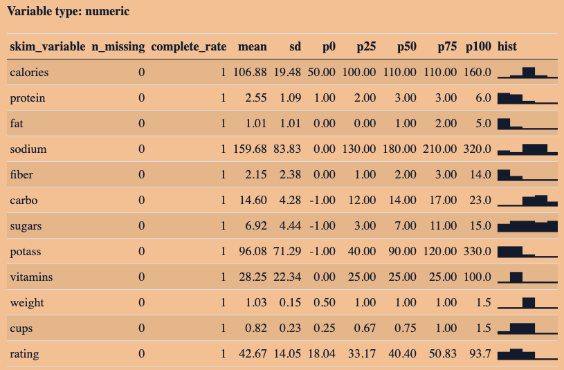

Show code
# Install Package
# install.packages("skimr")
# Load Packages
library(skimr)
library(readr)
library(dplyr)
library(janitor)
library(ggplot2)February 2, 2024
The inaugural installment of Ready4R focuses on the skimr package, maintained by rOpenSci.

Ready4R is a mailing list offering a free online course initiated by local Oregonian Ted Laderas to impart foundational knowledge in rstats and the tidyverse. Subscribers receive a weekly email delving into various methods for data exploration and analysis. On a weekly basis, I will look into these examples, providing additional insights based on my own experiences.
The inaugural installment focuses on the skimr package, maintained by rOpenSci.Ted emphasizes its usefulness with new datasets to grasp the broader picture. In the following code snippet, I install the skimr package and load all necessary data manipulation packages for this tutorial.
Next, we proceed to obtain the dataset, which is the Kaggle 80 Cerals. I am using a slightly modified version compared to Ted’s, necessitating adjustments to the code below.
# Load Data
cereals <- readr::read_csv("../../../../data/cereal.csv") |>
# clean names by converting to lowercase, replace spaces
# with underscore and removes special characters
janitor::clean_names() |>
# make shelf an ordered factor
dplyr::mutate(shelf = factor(shelf, ordered = TRUE)) |>
# convert mfr and type columns to categorical data
dplyr::mutate(across(c("mfr", "type"), as.factor))Before getting into the skimr package, let’s start with a traditional summary of the dataset:
name mfr type calories protein
Length:77 A: 1 C:74 Min. : 50.0 Min. :1.000
Class :character G:22 H: 3 1st Qu.:100.0 1st Qu.:2.000
Mode :character K:23 Median :110.0 Median :3.000
N: 6 Mean :106.9 Mean :2.545
P: 9 3rd Qu.:110.0 3rd Qu.:3.000
Q: 8 Max. :160.0 Max. :6.000
R: 8
fat sodium fiber carbo
Min. :0.000 Min. : 0.0 Min. : 0.000 Min. :-1.0
1st Qu.:0.000 1st Qu.:130.0 1st Qu.: 1.000 1st Qu.:12.0
Median :1.000 Median :180.0 Median : 2.000 Median :14.0
Mean :1.013 Mean :159.7 Mean : 2.152 Mean :14.6
3rd Qu.:2.000 3rd Qu.:210.0 3rd Qu.: 3.000 3rd Qu.:17.0
Max. :5.000 Max. :320.0 Max. :14.000 Max. :23.0
sugars potass vitamins shelf weight
Min. :-1.000 Min. : -1.00 Min. : 0.00 1:20 Min. :0.50
1st Qu.: 3.000 1st Qu.: 40.00 1st Qu.: 25.00 2:21 1st Qu.:1.00
Median : 7.000 Median : 90.00 Median : 25.00 3:36 Median :1.00
Mean : 6.922 Mean : 96.08 Mean : 28.25 Mean :1.03
3rd Qu.:11.000 3rd Qu.:120.00 3rd Qu.: 25.00 3rd Qu.:1.00
Max. :15.000 Max. :330.00 Max. :100.00 Max. :1.50
cups rating
Min. :0.250 Min. :18.04
1st Qu.:0.670 1st Qu.:33.17
Median :0.750 Median :40.40
Mean :0.821 Mean :42.67
3rd Qu.:1.000 3rd Qu.:50.83
Max. :1.500 Max. :93.70
The above summary provides a wealth of information. For columns designated as factors (mfr, type, and shelf), we observe counts for each category. Other column types display quantiles.
Now, let’s utilize skimr::skim to generate a condensed summary of the dataset:
| Name | cereals |
| Number of rows | 77 |
| Number of columns | 16 |
| _______________________ | |
| Column type frequency: | |
| character | 1 |
| factor | 3 |
| numeric | 12 |
| ________________________ | |
| Group variables | None |
This condensed summary, as Ted aptly notes, offers a more succinct overview. Discrepancies in variable counts by type often signal the need for variable transformation. Personally, I find this approach invaluable, especially when dealing with datasets containing numerous columns. Quickly verifying high-level assumptions can significantly streamline the analysis process. Let’s explore different types of summaries.
Below, we validate our assumptions:
There is only one character column, “name”.
There are 77 unique rows, aligning with our assumption that each row represents a different cereal.
Below, we confirm our assumptions:
There are three factor columns: mfr, type, and shelf.
No missing values are present.
Shelf is the only ordered factor.
The dataset comprises seven manufacturers, two types of cereal (cold and hot), and three shelf heights (1: floor, 2: middle, 3: top).
Lastly, we examine the numeric summary, which provides information similar to the traditional summary. However, it also includes histograms, offering additional insights.
Variable type: numeric
| skim_variable | n_missing | complete_rate | mean | sd | p0 | p25 | p50 | p75 | p100 | hist |
|---|---|---|---|---|---|---|---|---|---|---|
| calories | 0 | 1 | 106.88 | 19.48 | 50.00 | 100.00 | 110.00 | 110.00 | 160.0 | ▁▂▇▂▁ |
| protein | 0 | 1 | 2.55 | 1.09 | 1.00 | 2.00 | 3.00 | 3.00 | 6.0 | ▇▆▂▁▁ |
| fat | 0 | 1 | 1.01 | 1.01 | 0.00 | 0.00 | 1.00 | 2.00 | 5.0 | ▇▂▁▁▁ |
| sodium | 0 | 1 | 159.68 | 83.83 | 0.00 | 130.00 | 180.00 | 210.00 | 320.0 | ▃▂▇▇▂ |
| fiber | 0 | 1 | 2.15 | 2.38 | 0.00 | 1.00 | 2.00 | 3.00 | 14.0 | ▇▃▁▁▁ |
| carbo | 0 | 1 | 14.60 | 4.28 | -1.00 | 12.00 | 14.00 | 17.00 | 23.0 | ▁▁▆▇▃ |
| sugars | 0 | 1 | 6.92 | 4.44 | -1.00 | 3.00 | 7.00 | 11.00 | 15.0 | ▅▇▇▆▇ |
| potass | 0 | 1 | 96.08 | 71.29 | -1.00 | 40.00 | 90.00 | 120.00 | 330.0 | ▇▇▂▁▁ |
| vitamins | 0 | 1 | 28.25 | 22.34 | 0.00 | 25.00 | 25.00 | 25.00 | 100.0 | ▁▇▁▁▁ |
| weight | 0 | 1 | 1.03 | 0.15 | 0.50 | 1.00 | 1.00 | 1.00 | 1.5 | ▁▁▇▁▁ |
| cups | 0 | 1 | 0.82 | 0.23 | 0.25 | 0.67 | 0.75 | 1.00 | 1.5 | ▂▇▇▁▁ |
| rating | 0 | 1 | 42.67 | 14.05 | 18.04 | 33.17 | 40.40 | 50.83 | 93.7 | ▅▇▅▁▁ |
Exploring this has been enlightening, and I anticipate revisiting it. It’s surprising how frequently I find myself explaining to non-data professionals that the mean (or average) isn’t always the most reliable indicator of sample behavior. Data can be heavily skewed, making visualizations essential for accurate interpretation. While tools like ggplot offer sophisticated visualization options, the initial data review provided by skimr is invaluable.
---
title: "Ready4R: skimr Package"
date: "2024-02-02"
categories: ["Ready4R","R", "Exploratory Data Analysis"]
format:
html:
code-fold: true
code-summary: "Show code"
code-tools: true
toc: true
draft: false
---
The inaugural installment of [Ready4R](https://buttondown.email/ready4r) focuses on the [skimr](https://cran.r-project.org/web/packages/skimr/skimr.pdf) package, maintained by [rOpenSci](https://docs.ropensci.org/skimr/articles/skimr.html?utm_source=ready4r&utm_medium=email&utm_campaign=ready-for-r-2024-02-05-skim-your-data).

# Introduction
[Ready4R](https://buttondown.email/ready4r) is a mailing list offering a free online course initiated by local Oregonian [Ted Laderas](https://laderast.github.io/) to impart foundational knowledge in rstats and the tidyverse. Subscribers receive a weekly email delving into various methods for data exploration and analysis. On a weekly basis, I will look into these examples, providing additional insights based on my own experiences.
# Skim You Data
The inaugural installment focuses on the [skimr](https://cran.r-project.org/web/packages/skimr/skimr.pdf) package, maintained by [rOpenSci](https://docs.ropensci.org/skimr/articles/skimr.html?utm_source=ready4r&utm_medium=email&utm_campaign=ready-for-r-2024-02-05-skim-your-data).Ted emphasizes its usefulness with new datasets to grasp the broader picture. In the following code snippet, I install the skimr package and load all necessary data manipulation packages for this tutorial.
```{r linstall and load packages}
#| output: false
# Install Package
# install.packages("skimr")
# Load Packages
library(skimr)
library(readr)
library(dplyr)
library(janitor)
library(ggplot2)
```
Next, we proceed to obtain the dataset, which is the [Kaggle 80 Cerals](https://www.kaggle.com/datasets/crawford/80-cereals). I am using a slightly modified version compared to Ted's, necessitating adjustments to the code below.
```{r load data}
#| output: false
# Load Data
cereals <- readr::read_csv("../../../../data/cereal.csv") |>
# clean names by converting to lowercase, replace spaces
# with underscore and removes special characters
janitor::clean_names() |>
# make shelf an ordered factor
dplyr::mutate(shelf = factor(shelf, ordered = TRUE)) |>
# convert mfr and type columns to categorical data
dplyr::mutate(across(c("mfr", "type"), as.factor))
```
### Overall Summary
Before getting into the skimr package, let's start with a traditional summary of the dataset:
```{r cerals summary}
summary(cereals)
```
The above summary provides a wealth of information. For columns designated as factors (mfr, type, and shelf), we observe counts for each category. Other column types display quantiles.
Now, let's utilize skimr::skim to generate a condensed summary of the dataset:
```{r skim summary}
skim_output <- skimr::skim(cereals)
summary(skim_output)
```
This condensed summary, as Ted aptly notes, offers a more succinct overview. Discrepancies in variable counts by type often signal the need for variable transformation. Personally, I find this approach invaluable, especially when dealing with datasets containing numerous columns. Quickly verifying high-level assumptions can significantly streamline the analysis process. Let's explore different types of summaries.
### Character Summary
Below, we validate our assumptions:
- There is only one character column, "name".
- There are 77 unique rows, aligning with our assumption that each row represents a different cereal.
```{r character skim summary}
skimr::yank(skim_output, "character")
```
### Factor Summary
Below, we confirm our assumptions:
- There are three factor columns: mfr, type, and shelf.
- No missing values are present.
- Shelf is the only ordered factor.
- The dataset comprises seven manufacturers, two types of cereal (cold and hot), and three shelf heights (1: floor, 2: middle, 3: top).
```{r factor skim summary}
skimr::yank(skim_output, "factor")
```
### Numeric Summary
Lastly, we examine the numeric summary, which provides information similar to the traditional summary. However, it also includes histograms, offering additional insights.
```{r numeric skim summary}
skimr::yank(skim_output, "numeric")
```
### Overall
Exploring this has been enlightening, and I anticipate revisiting it. It's surprising how frequently I find myself explaining to non-data professionals that the mean (or average) isn't always the most reliable indicator of sample behavior. Data can be heavily skewed, making visualizations essential for accurate interpretation. While tools like ggplot offer sophisticated visualization options, the initial data review provided by skimr is invaluable.